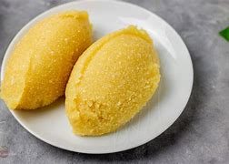

Eba

Description.
Eba is a widely consumed food across Nigeria. It is made from garri which is prepared from cassava. It is easy to prepare and is very filling.
Ingredients
Steps
- Bring two cups of water to boil.
- Turn three quarters of the water in a bowl.
- Add the garri little by liitle making sure to distribute it evenly in the water
- Do this till the garri completely covers the garri. Add what is left of the boiling water.
- Turn the garri with a ladle till the consistency is even. Add water or garri till the desired texture is reached.